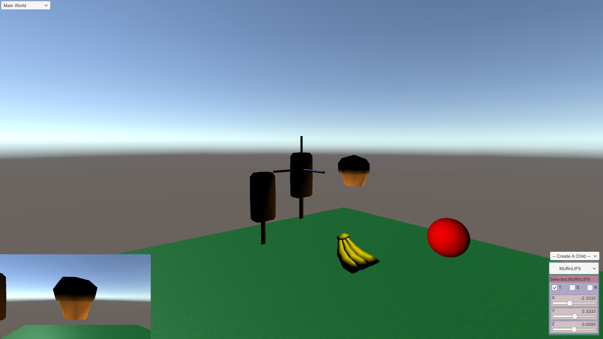

<table border="1">
  <tr>
    <td align="center" style="text-align:left;">
      <br>
           <b>Developers: </b><br>
           Leonardo Mota-Villaraldo<br>
           Nick Soerens<br>
    </td>
    <td>
      <p><b><u>App Name: Basic Life</u></b></p>
      <p>
        Grow your own pet. Create as many foods as you can to make your pet grow. Not feeding them causes them
        causes them to starve. When your pet starves it shrinks!
      </p>
      <p><a href="https://docs.google.com/presentation/d/13-yE6W7fY1DX2SsWRX2X0Hq_NZ-UYEm1bwdTYg0RPeg/edit?usp=sharing"
          >Project proposal</a>
          <a href="https://assetstore.unity.com/packages/3d/props/food/free-casual-food-pack-mobile-vr-85884"
          >Food Asset Pack</a>
          <br />
          
          
          
          
      </p>
    </td>
  </tr>
</table>